Designing supervised ML workflows to make a Data catalog AI-powered
A classification algorithm product for Data Governance context

Why this product exists
Utilizing our customer data sets, we can build a Catalog which goes beyond just being a directory, and becomes a learning system
Most modern enterprise organizations use Microservices, leading to fast, scalable products & efficient engineering. This distributed model also means each team manages its own data, giving rise for the need of a Data catalog to consolidate the systems & metadata.
Challenges with discoverability, data silos across different sources, and dependency on multiple teams to access data are resulting problems which traditional catalogs have made attempts to solve.
Now, using customer-provided metadata/labels like PII type, the classification algorithm can be trained to be better, leading to trustworthy insights and forecasts.
Labeling flows for model (re)training, and evaluation
The quality of this LLM-driven experience is only as good as access to real-time & dynamic product data
High level audience
How might we through labeled metadata & human-in-the-loop workflows build a Catalog where success is classification precision & recall, not just discoverability?
Why it matters
Data engineers & analysts confirm that Data catalogs fail at accuracy without supervision
Business value such as identifying users that about to churn, and swiftly taking actions to retain them can be derived, thus saving money on customer acquisition costs.
Onboarding
From Onboarding to the Aha moment
Triggers after the first database ingestion
Empty state

Classification explainer
Datasets & sources
Ingesting databases, browsing files, and scanning protocol
The scanning protocol sets how often the Transcend algorithm gets trained by customer data

Browsing through a fully ingested db

All database states

Scanning protocol

Other table states
Algorithm training
The model detects, tags similar metadata across datapoints, and suggests a classification into categories
Accepting or rejecting the label is the supervisory training of the model.
The algo then knows to recognize & classify the rest
This could be a Yes/No/Not sure

Training tab

Expected user actions

State: Datasilo classification is complete

State: Metadata classification is complete
Training a particular datapoint, not the whole database/silo
This could be a Yes/No/Not sure


Expected user achievement - 1
Accounting for the confidence of Data quality means a scanning protocol
And training the model on the customer's own specific data
Onboarding flow
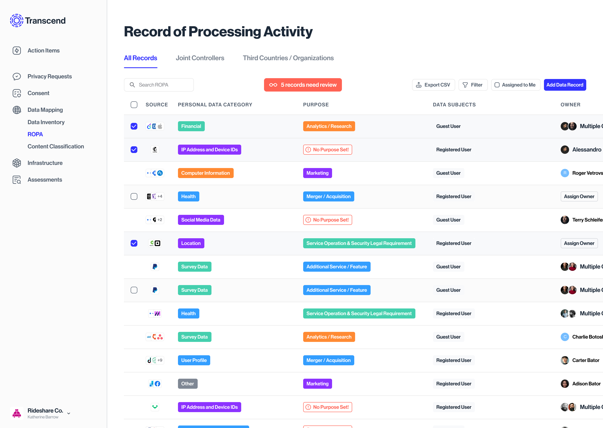
An overview for all records - both manual inputs, & generated records from the systems
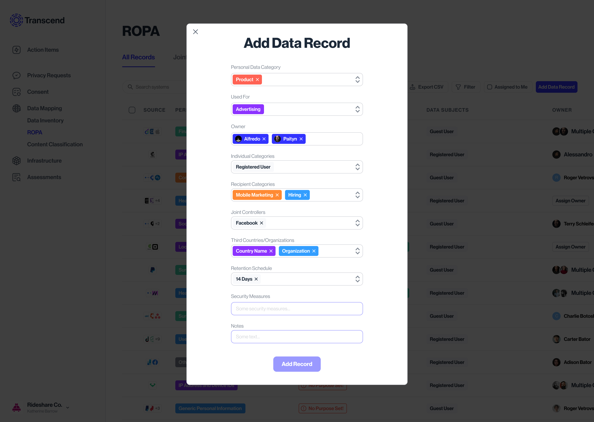
User wants to manually add records
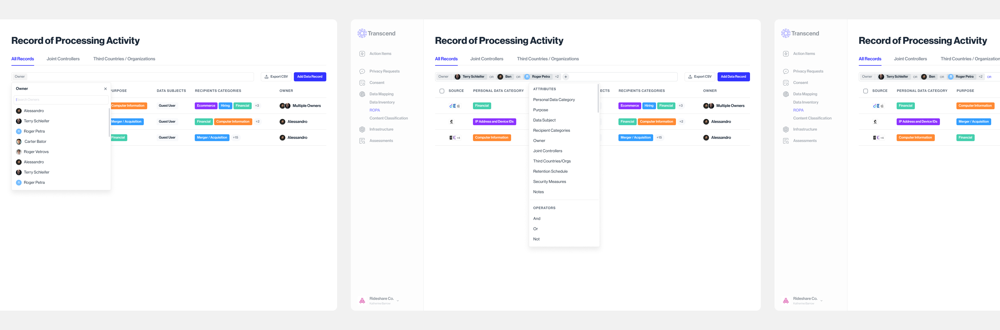
Filtering flow
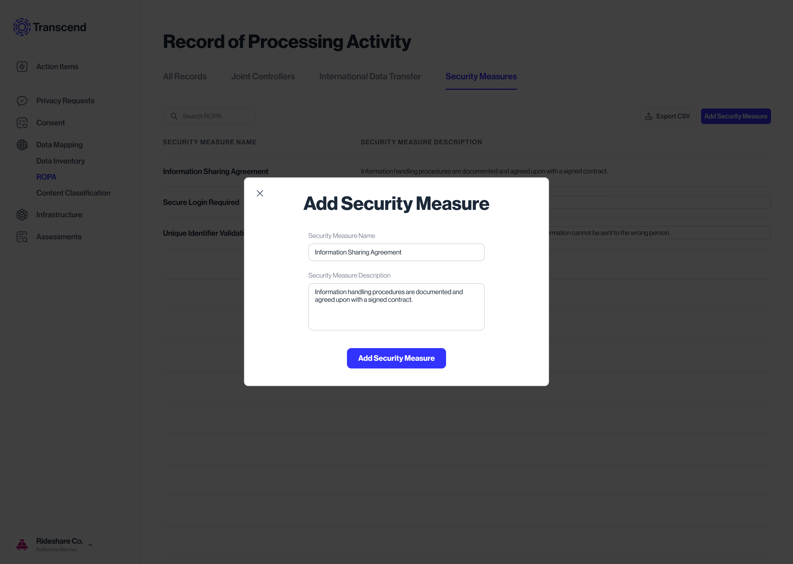
Tab flow to add new security measures
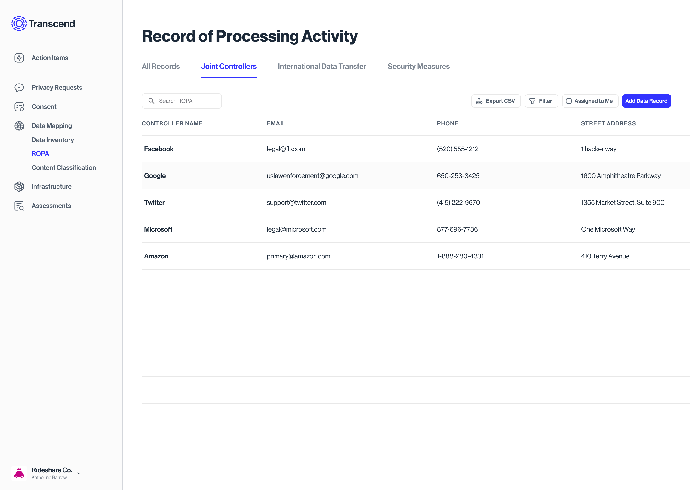
Status view of all Data protection obligations required as a data processor/controller
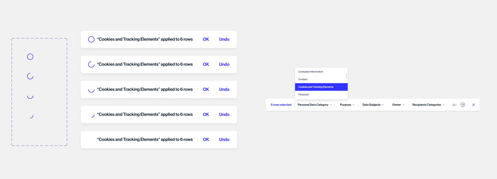
Toast which pops up when rows are multiselected
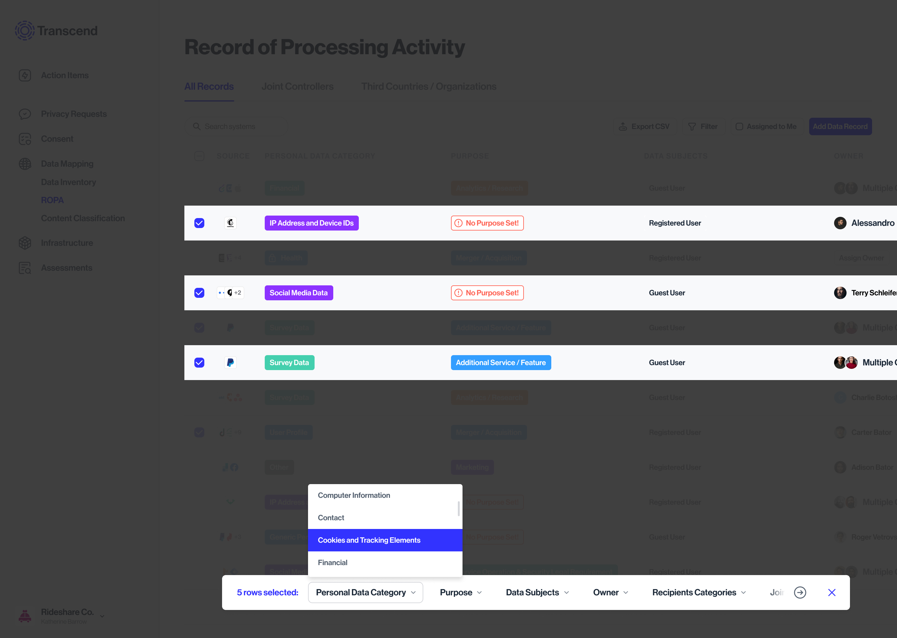
Making bulk edit action on records
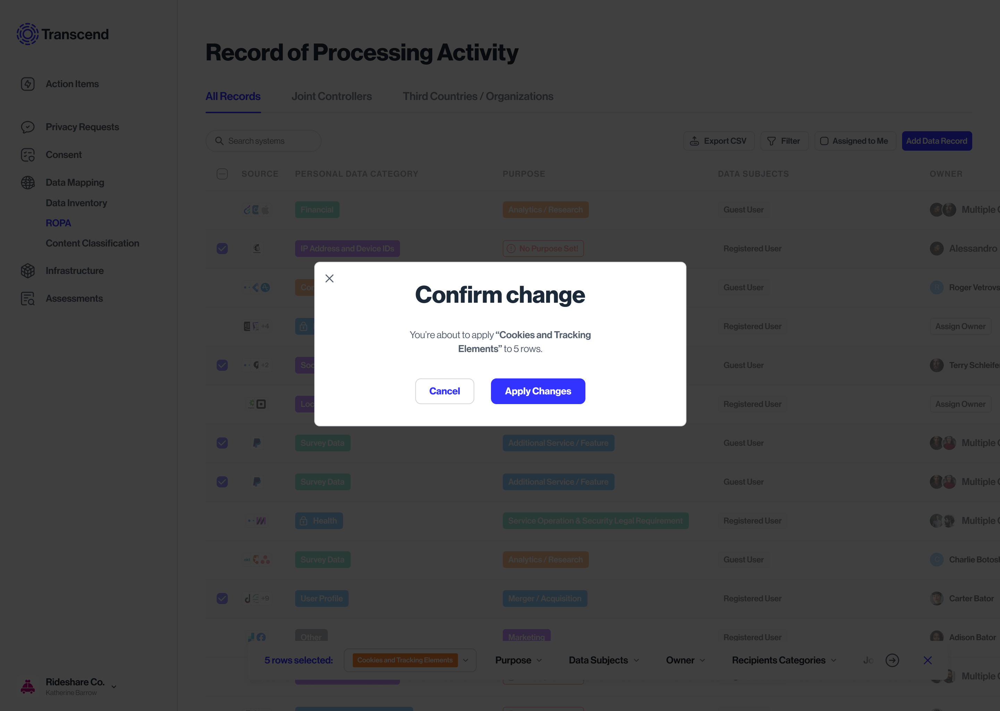
Actions confirmation modal
Learning their context
What influenced my design decisions
PRD, lofi sketches & Inspirations

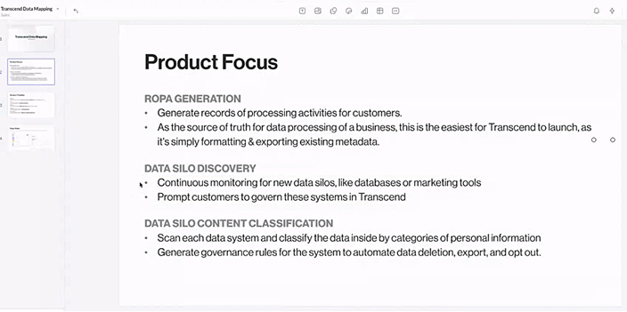
A Product specification document detailing how it fits in the Governance ecosystem
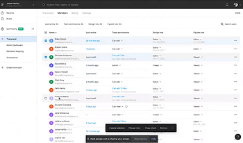
Outcomes
The Business impact
1/3rd of the existing customers bought the ROPA app. Also, this became a key template file, as many custom components I designed got pushed to the global design system.
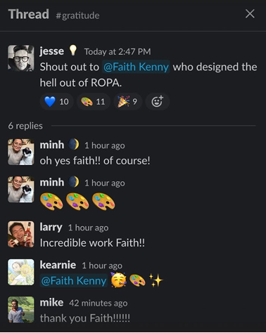